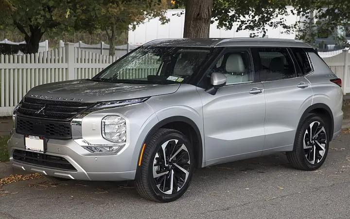
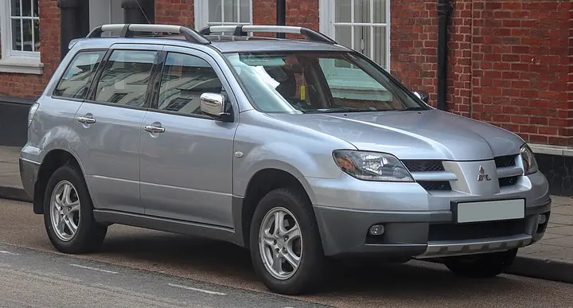

Mitsubishi Outlander
Fourth generation (GM/GN/ZM; 2021) · 2021–present
Abstract
This generation of the Mitsubishi Outlander was built 2021–present in Japan: Okazaki, Aichi (Okazaki Plant), China: Changsha (GMMC: until 2023). Designed by Ryosuke Matsuoka, Shuichiro Yamamoto and Kenichi Noda.


1Specifications
| Production | 2021–present2026 (Rogue Plug-in Hybrid) |
|---|---|
| Model years | 2022–present2026 (Rogue Plug-in Hybrid) |
| Assembly | Japan: Okazaki, Aichi (Okazaki Plant)China: Changsha (GMMC: until 2023) |
| Designer | Ryosuke Matsuoka, Shuichiro Yamamoto and Kenichi Noda |
| Platform | Renault–Nissan CMF-CD platform |
| Engine | Petrol:1.5 L 4B40 turbo I4 (mild hybrid)2.5 L Nissan PR25DD I4 (GM4W)Petrol PHEV:2.4 L 4B12 I4 (GN0W) |
| Electric motor | 1×85 kW S91 AC permanent magnet synchronous (front, PHEV)1×100 kW YA1 AC permanent magnet synchronous (rear, PHEV) |
| Transmission | Jatco CVT8 INVECS-III CVT |
| Battery | 20 (~18 usable) kWh lithium-ion (PHEV) |
| Range | 84 km WLTP/NEDC (PHEV) |
| Charging | 3.7 kW AC (PHEV)22 kW DC (PHEV)V2H: ~10 kW (PHEV)V2L: 1.5 kW |
| Wheelbase | 2705 mm |
| Length | 4709–4720 mm |
| Width | 1862 mm |
| Height | 1740–1748 mm |
| Weight | 2010–2110 kg (PHEV) |
| Also called | Nissan Rogue Plug-in Hybrid (North America) |
| Related | Nissan Rogue/X-Trail (T33) |
2Versions
- Outlander PHEV
3Previous generations

_LS_2WD_wagon_(2016-07-07)_01.jpg){kind=link}




4Generation by generation
Length +7% from the first to the last
CU 20014,410 mm
CW 20064,640 mm
GF 20124,695 mm
GM 20214,709 mm
Weight +25% from the first to the last
CU 20011,605 kg
CW 20061,589 kg
GF 20121,395 kg
GM 20212,010 kg